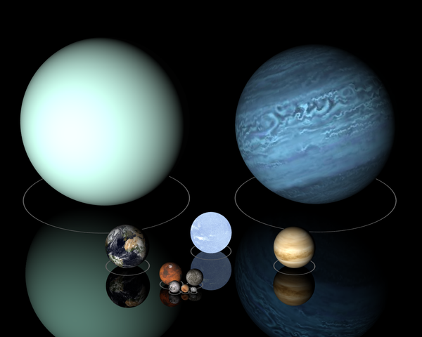
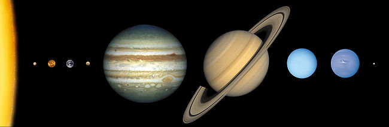

Плане́та (лат. planētae від грец. πλανήτης — той, що блукає[1]) — кулясте не самосвітне тіло,
яке обертається навколо Сонця чи іншої зорі. Орбіта цього обертання дуже близька до еліпса.
За найсучаснішим означенням, плане́тою сонячної системи вважають астрономічний об'єкт,
котрий обертається навколо Сонця, має достатню масу для того, щоби під дією власної гравітації
набути кулястої форми та має «вичищену околицю», тобто, переважає на своїй орбіті.
Ті астрономічні об'єкти, що відповідають двом першим умовам, але не відповідають третій,
називають карликовими планетами[2].

Планети, котрі перебувають поза межами Сонячної системи, називають екзопланетами.
Планети обертаються навколо зірок і видимі завдяки їх освітленню випромінюванням зірок.
Крім Сонячної системи, планети також були відкриті поза нашою системою у 1992-му році
поблизу пульсару PSR В1257+12.
Історія
Ще в давнину люди помітили, що деякі об'єкти на небі змінюють своє розташування відносно інших,
непорушних зір. Саме за це «блукання» планети отримали свою назву (грец. πλανήτης — той, що блукає).
Греки й римляни називали планети іменами богів: Гермес — Меркурій, Арес — Марс, Зевс — Юпітер,
Кронос — Сатурн і Афродіта — Венера. До планет зараховували також Місяць і Сонце[джерело?].
Дослідники античності вважали, що всі планети обертаються навколо Землі.
Попри це Птолемею вдалося побудувати теорію руху планет, яка дозволяла доволі
точно передбачати майбутнє (і минуле) їх розташування серед зір.
Вона використовувалася протягом більш ніж тисячі років.
У XVI столітті Миколай Коперник у своїй праці «Про обертання небесних сфер» запропонував побудову,
в якій лише Місяць обертається навколо Землі, а всі інші планети (і, зокрема, Земля) обертаються навколо
Сонця.
В анонімній передмові до книги Коперника викладені теорії оголошено суто математичними гіпотезами,
призначеними лише для спрощення розрахунків. Однак інші дослідники дійшли висновку,
що така картина набагато краще пояснює спостережувані явища і геліоцентрична система світу стала
загальновизнаною.
Вже в Новий час було відкрито ще три планети.
За звичаєм, відкриті у XVIII — XX ст. планети також отримали міфологічні назви: Уран, Нептун, Плутон.
Таким чином кількість планет сягнула дев'яти.
1995 року відкрито першу позасонячну планету зірки, що перебуває за 50 світлових років від Землі.
Станом на 20 січня 2015 року (згідно з Енциклопедією позасонячних планет) достеменно
встановлене
існування 1900 екзопланет у 1202 планетних системах, у 480 з яких більше однієї планети[3].
У серпні 2006 статус Плутона було змінено на карликову планету.
Планети Сонячної системи
Сьогодні у Сонячній системі відомо 8 планет: Меркурій, Венера, Земля, Марс, Юпітер, Сатурн, Уран, Нептун.
У 2006 р. 26 Генеральна асамблея Міжнародного астрономічного союзу скасувала статус планети для Плутона.
Планети земної групи — Меркурій, Венера, Земля, Марс — близькі за розмірами і будовою, середня густина їх
речовини становить 5,52-3,97 г/см3. До цієї групи примикають деякі великі супутники планет,
які схожі за своїми властивостями до планет земної групи.
Це супутники Юпітера Ганімед, Іо, Європа, Каллісто і супутник Сатурна — Титан.
